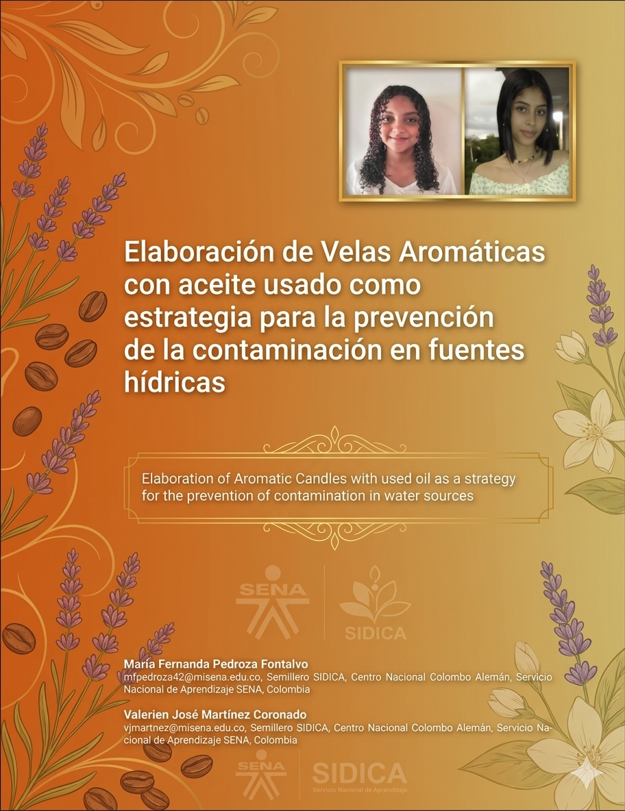
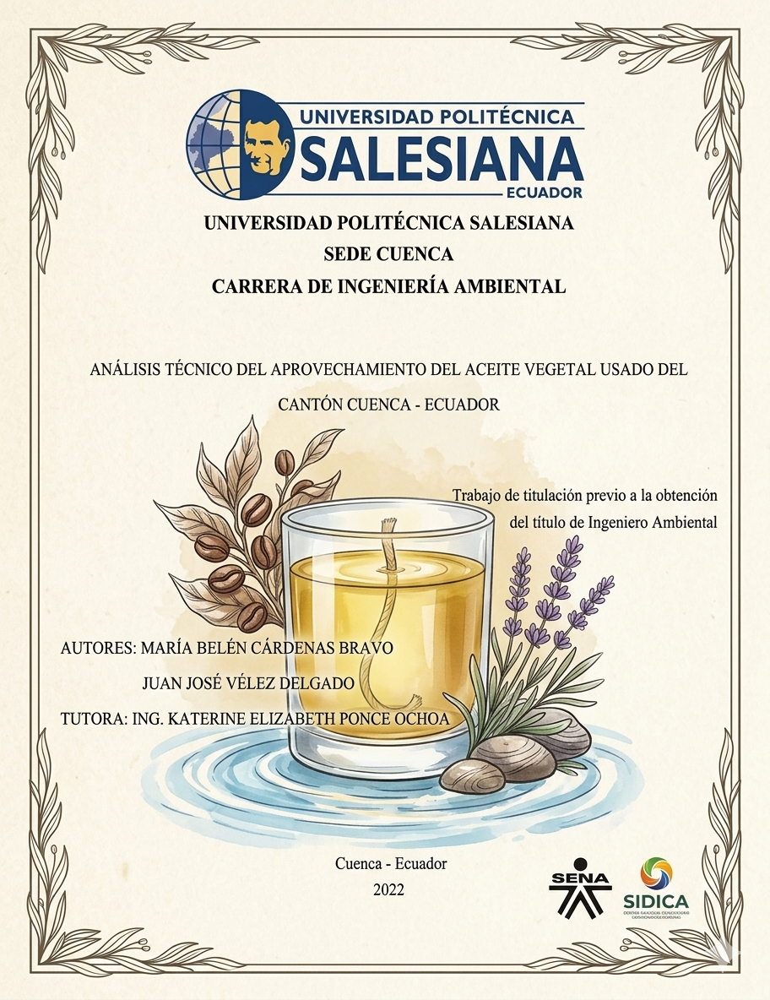
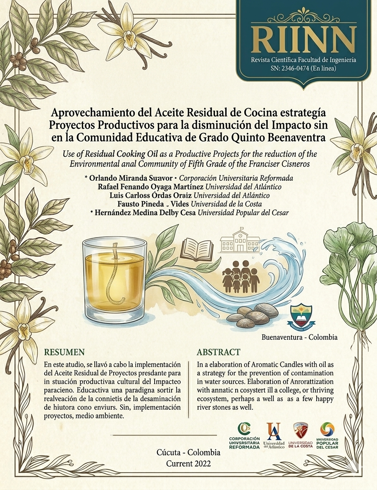
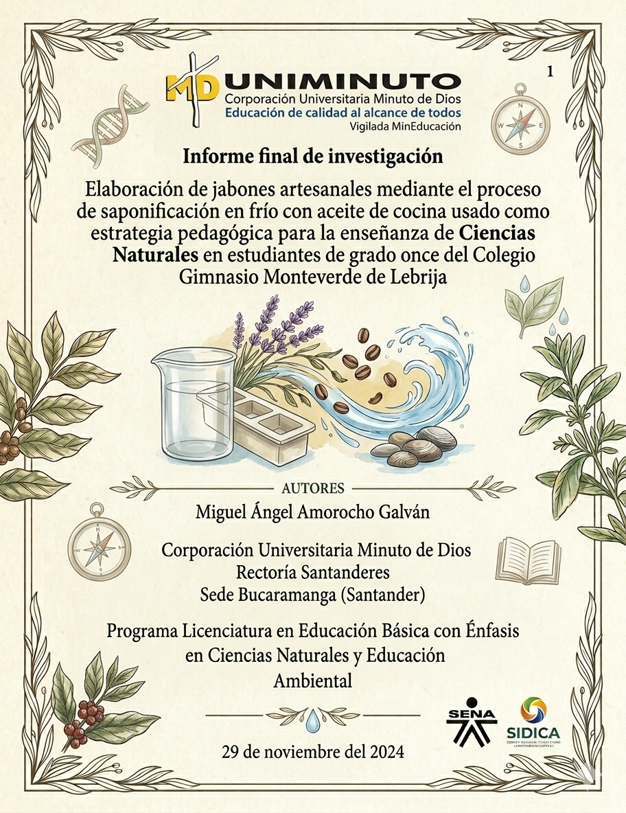
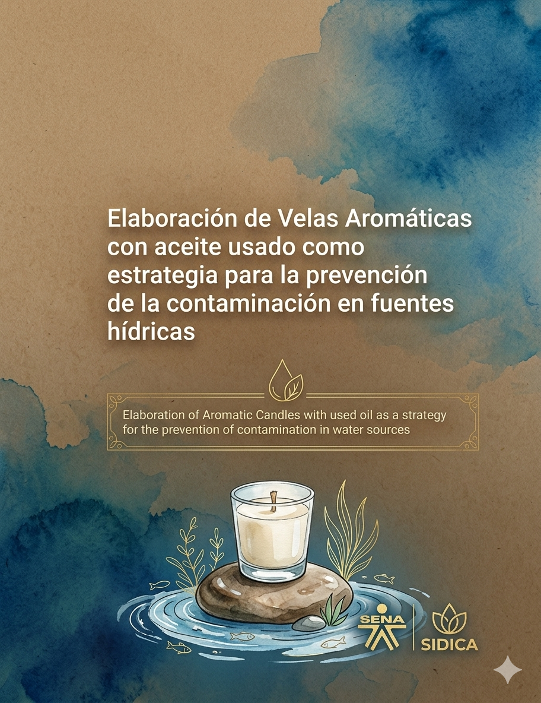
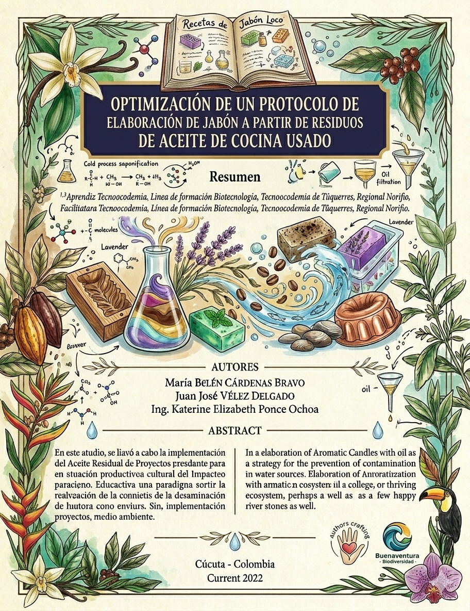

Reutilización de aceite usado para productos sostenibles

María Fernanda Pedroza Fontalvo, Valerien José Martínez Coronado. (2022). Elaboración de Velas
Aromáticas con aceite usado como estrategia para la prevención de la contaminación en fuentes
hídricas.
REVISTAS SENA. DOI

Cárdenas Bravo, M. B., & Vélez Delgado, J. J. (2022). Análisis técnico del aprovechamiento del
aceite vegetal usado del cantón Cuenca – Ecuador. Universidad Politécnica Salesiana, Ecuador.
LINK. DSPACE UPS

Cárdenas Ortiz, L.C. et al. 2023. Aprovechamiento del Aceite Residual de Cocina como estrategia
de Proyectos Productivos para la disminución del Impacto Ambiental en la Comunidad Educativa de
Grado Quinto de la Institución Francisco Javier Cisneros, Distrito de Buenaventura. Ingeniería e
Innovación. 11, 1 (Jul. 2023).
LINK. DOI

Amorocho Galván, M. (2024). Elaboración de jabones artesanales mediante el proceso de
saponificación en frío con aceite de cocina usado como estrategia pedagógica para la enseñanza
de Ciencias Naturales en estudiantes de grado once del Colegio Gimnasio Monteverde de Lebrija.
[Trabajo de Investigación e Innovación, Corporación Universitaria Minuto de Dios - UNIMINUTO].
Repositorio Repositorio
UNIMINUTO.

Pedroza Fontalvo, M. F., & Martínez Coronado, V. J. (2022). Elaboración de velas aromáticas con
aceite usado como estrategia para la prevención de la contaminación en fuentes hídricas. Revista
Sennova: Revista del Sistema de Ciencia, Tecnología e Innovación.
LINK. DOI

Pabón Figueroa, L. V., Maya Martínez, K. E., Mora Delgado, L. E., & Cabrera Solarte, A. E.
(2022). Optimización de un protocolo de elaboración de jabón a partir de residuos de aceite de
cocina usado. CON-CIENCIA y TÉCNICA (Revista Tecnoacademia), 6(1), 72–74
LINK. Revista Sena